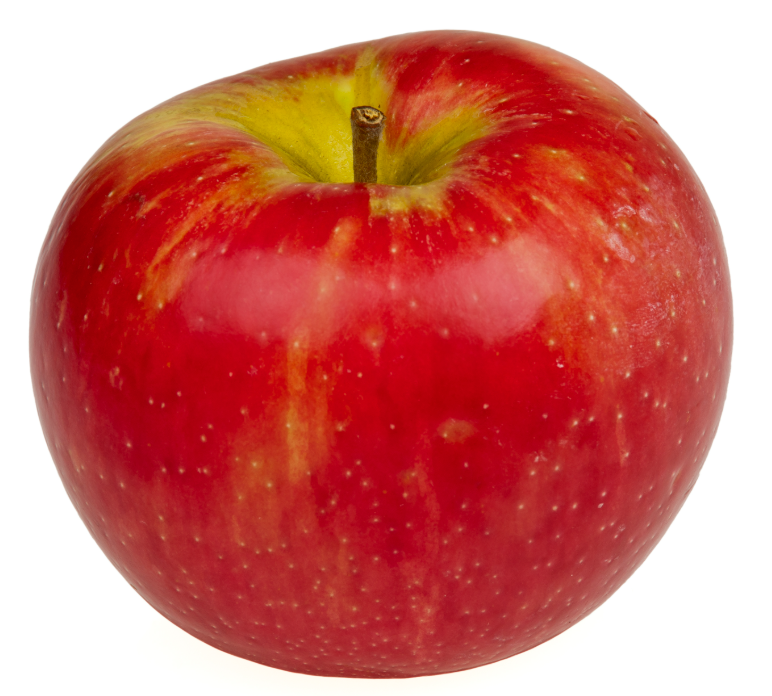

Appel

Over de appel
Een appel is een veel gegeten fruitsoort die bekendstaat om zijn frisse smaak, stevige structuur en natuurlijke suikers. Appels worden vaak bewaard in de koelkast omdat ze daar langer vers blijven.
Houdbaarheid en bewaartips
Appels blijven het langst goed op een koele, droge plaats. In de koelkast kunnen ze meestal langer bewaard worden dan op kamertemperatuur. Let op zachte plekken, verkleuring of een afwijkende geur als tekenen van bederf.
Vervalstadia
Hier kun je later extra foto's toevoegen van verschillende stadia van verval, bijvoorbeeld een verse appel, een appel met bruine plekken en een bedorven appel.